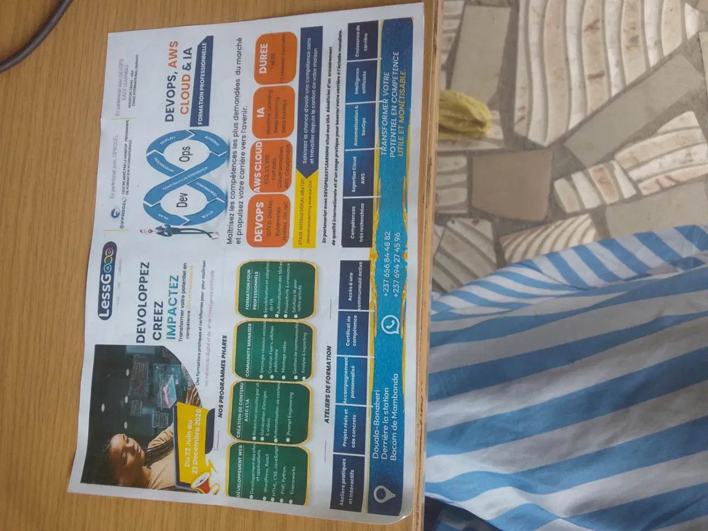

LESSGO COMMUNITY · FORMATION PROFESSIONNELLE
Transformez votre potentiel en compétences qui comptent.
Formations pratiques en développement, DevOps, Cloud, IA et création numérique.
+7domaines de formation
100%orienté pratique

Notre univers
Apprendre. Construire. Évoluer.
Un environnement pensé pour passer de la découverte à la réalisation de projets concrets.
⌘
Apprentissage pratique
Ateliers, projets et exercices pour transformer les notions en compétences.
↗
Compétences recherchées
Développement, Cloud, DevOps, IA et création numérique : des parcours tournés vers l’avenir.
◈
Accompagnement
Un parcours progressif adapté aux débutants comme aux profils qui veulent se perfectionner.
∞
Communauté
Une dynamique de partage pour apprendre, créer et progresser ensemble.
Programmes
Nos formations
0domaines de formation
0% pratique
0communauté
0année d’accélération
Vie du centre
En images
Ils en parlent
Une communauté qui avance
Prêt à développer votre potentiel ?
Choisissez votre parcours et passez à l’action.